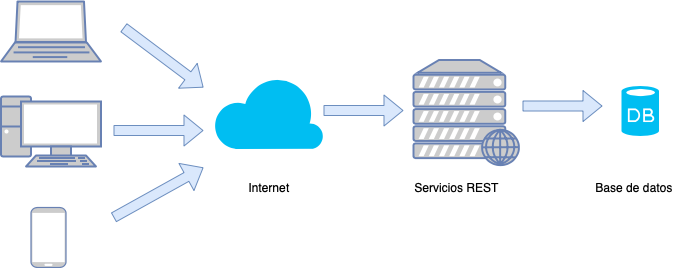
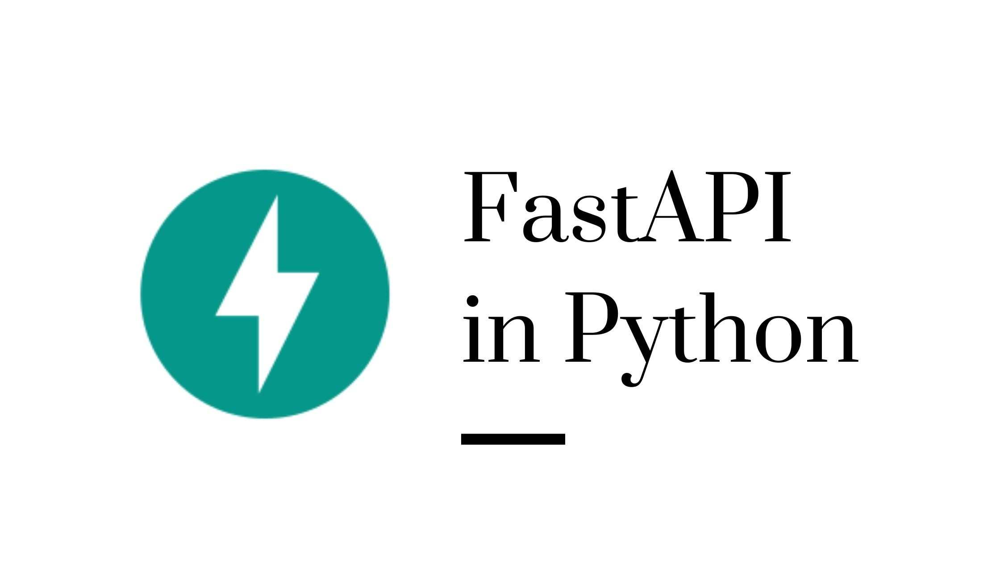

Servicios REST con

http://www.danimolina.net
¿Quién soy yo?
- Profesor Titular de Informática de la UGR.
- Experto en Inteligencia Artificial.
- Desarrollador/Usuario de Python durante más de 10 años.

¿Quién soy yo?
- Partidario convencido del Software Libre.
- Linuxero convencido, y usuario de Emacs.
- Gran fan de Python.

Material del taller
Servicios REST
¿Qué son servicios REST?

¿Qué son servicios REST?

Ventajas de los servicios REST
Distinto lenguaje de frontend y de backend.
Fácil y cómodo.
Modelo multi-servicios.
Cada vez más usados con frameworks JS.
FastAPI
¿Qué es FastAPI?

Librería en Python para servicios REST.
Fácil de usar, y centrada en lo usado.
¿Qué es Python?
Lenguaje de programación
de propósito general y fácil de aprender.
¿Por qué es popular?
Es muy sencillo y legible
Es muy potente
- Repositorio centralizado de librerías.
- Librerías para casi todo.

Usado en Machine Learning
- Lenguaje muy usado en Machine Learning.

- Se diseñó para integrarlas con sistemas webs.
demo de FastAPI
Muy Sencillo
Ejecutándolo
Documentación

Lectura de parámetros
Parámetros
Validación automática
Servicio REST de Series
Servicio REST de Series
Acceso a Base de Datos de datos sobre series de streaming.
Servicio REST sobre dichos datos.
Validación de datos.
Página web
Usaremos Bootstrap v5 como framework CSS.
Usaremos Vue como frontend.
Se ejecuta JS en el cliente.
Compondremos la web a partir de los servicios REST.
Caso 1: Consulta de Categorías
Servicio REST (demo
HTML
Javascript
Resultado

Mayor seguridad
Para restringir las peticiones se puede utilizar CORS:
Caso 2: Listado de Series por Categoría
Vamos a asegurar de listar una categoría existente.
Para ello creamos un enumerado:
Listado de Series por Categoría
Ahora poder indicar que el parámetro aceptable es de ese tipo:
# Comprueba que sea un valor válido
@app.get("/series/{category}")
def series(category: Category):
passSi es una categoría de las válidas devuelve un JSON de error directamente.
Listado de Series por Categoría
Creamos la estructura con la información de la serie:
Por ahora solo en memoria, luego diremos cómo obtenerlo de la BD.
Listado de Series por Categoría
Indicamos el modelo de respuesta, y algún ejemplo a mano:
# List es de typing
@app.get("/series/{category}", response_model=List[Serie])
def series(category: Category):
def series(category: Category):
series = [Serie(title="The Big Bang Theory",
description="Serie de frikis", category=Category.Comedy),
Serie(title="Juego de Tronos",
description="Todos mueren", category=Category.Drama)]
return [serie for serie in series if serie.category == category]Añadiendo BD al ejemplo anterior
Creamos la Base de Datos
Diagrama E-R

Librería de acceso
Usaremos la librería SQLAlchemy pero cualquiera otra librería sería perfectamente posible.
Ventajas: Admite todo tipo de Base de Datos sólo cambiando la URL de conexión con la BD:
- MySQL
- Postgres.
- SQLite.
- …
Definimos los modelos
class Category(Base):
__tablename__ = "category"
id = Column(Integer, primary_key=True, index=True)
name = Column(String(255), index=True)
class Serie(Base):
__tablename__ = "serie"
id = Column(Integer, primary_key=True, index=True)
title = Column(String, index=True)
description = Column(String)
category_id = Column(Integer, ForeignKey('category.id'))
category = relationship('Category')Configuramos la Base de Datos
Modificamos la consulta de Categorias
@app.get("/categories")
def categories(db: Session = Depends(get_db)):
# Leo todas las categorías
categories = db.query(models.Category).all()
# Leo las categorías usando la sintaxis ORM de SQLAlchemy
cats = [schema.Category(id=id, name=category.name) for id, category in enumerate(categories)]
return {"categories": cats}Modificamos la consulta de Series
@app.get("/series/{category_str}", response_model=List[schema.Serie])
def series(category_str: str, db: Session = Depends(get_db)):
category = db.query(models.Category).filter_by(name=category_str).first()
if category is None:
return []
else:
series_db = db.query(models.Serie).join(models.Category).filter(models.Category.id==category.id).all()
series = [schema.Serie(title=serie.title, description=serie.description, category=category_str) for serie in series_db]
print(series)
return series¿Hay que modificar la web HTML?
No, no hay que hacerlo, ambos componentes son débilmente acoplados
¿Alguna pregunta?